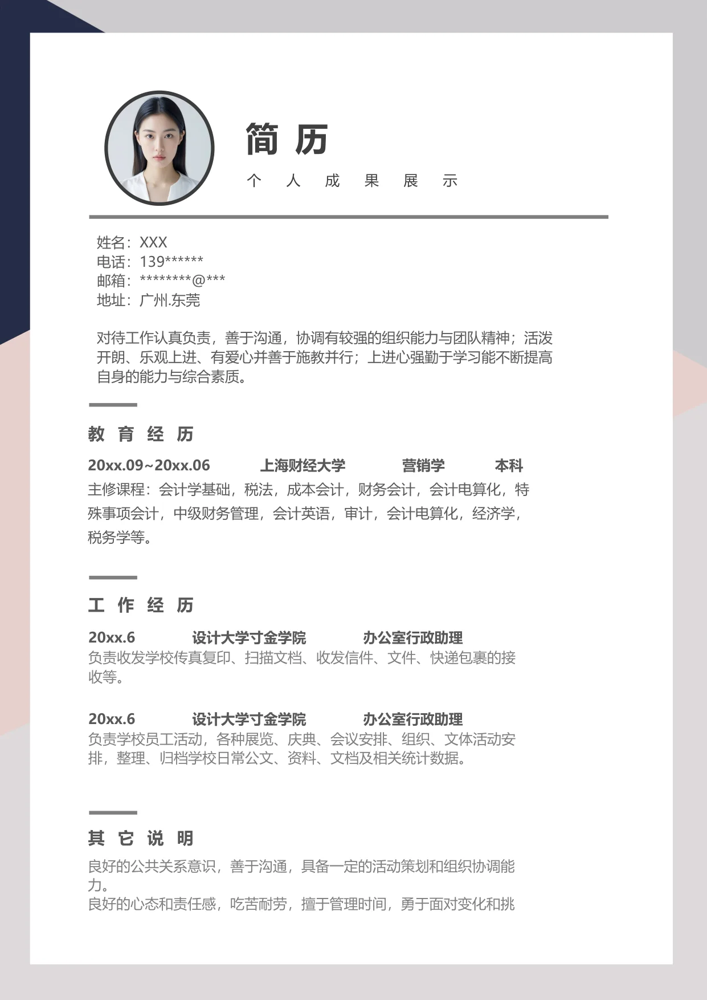

0
简 历
个
人
成
果
展
示
良好的公共关系意识，善于沟通，具备一定的活动策划和组织协调能
力。
良好的心态和责任感，吃苦耐劳，擅于管理时间，勇于面对变化和挑
其它说明
工作经历
教育经历
20xx.09~20xx.06 上海财经大学 营销学 本科
主修课程：会计学基础，税法，成本会计，财务会计，会计电算化，特
殊事项会计，中级财务管理，会计英语，审计，会计电算化，经济学，
税务学等。
姓名：XXX
电话：139******
邮箱：********@***
地址：广州.东莞
对待工作认真负责，善于沟通，协调有较强的组织能力与团队精神；活泼
开朗、乐观上进、有爱心并善于施教并行；上进心强勤于学习能不断提高
自身的能力与综合素质。
20xx.6 设计大学寸金学院 办公室行政助理
负责收发学校传真复印、扫描文档、收发信件、文件、快递包裹的接
收等。
20xx.6 设计大学寸金学院 办公室行政助理
负责学校员工活动，各种展览、庆典、会议安排、组织、文体活动安
排，整理、归档学校日常公文、资料、文档及相关统计数据。